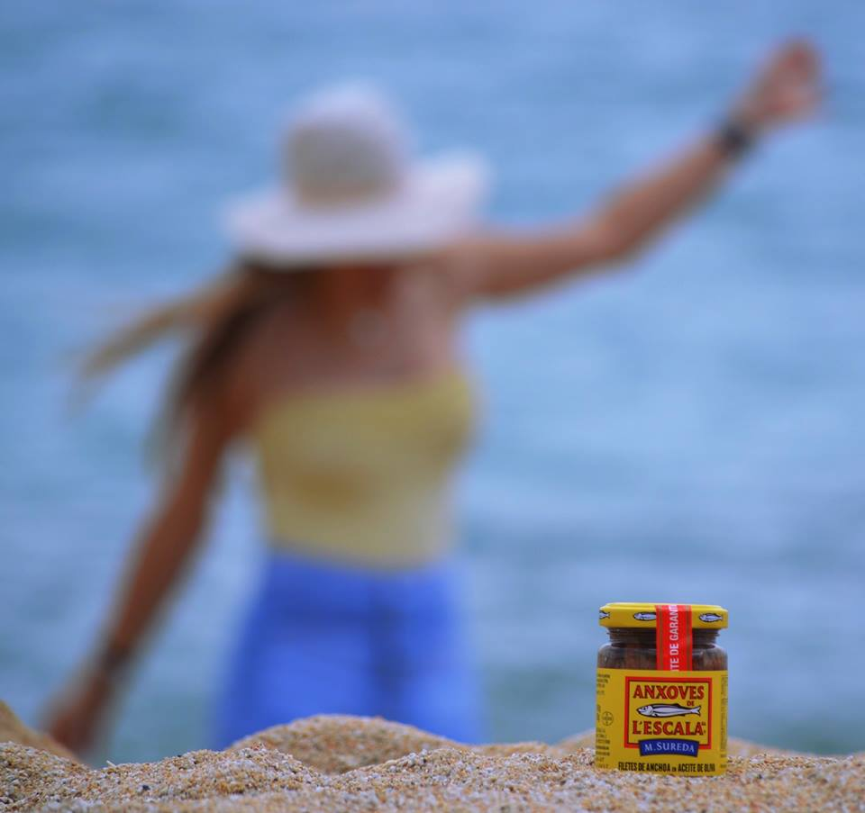

LAS ANCHOAS
UN PRODUCTO MEDITERRANEO
La anchoa es un pescado azul y un ingrediente emblemático de la dieta mediterránea. El aceite de oliva de las mejores olivos españolas también beneficia la salud humana.
El consumo de anchoas es muy recomendable para mantener una dieta equilibrada, rica en Omega 3 que contribuye a regular los niveles de colesterol.
Anchoves de l'Escala S.A. también ofrece filetes de anchoa en aceite de oliva virgen extra ecológico.